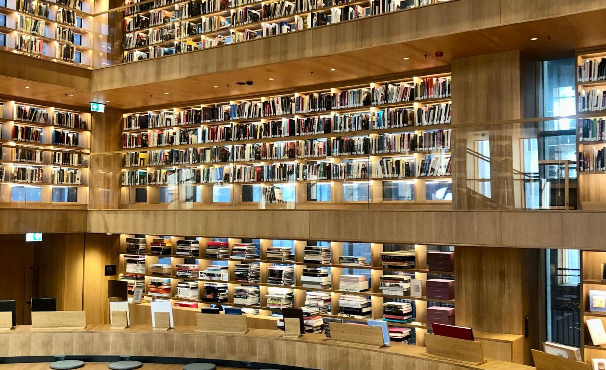
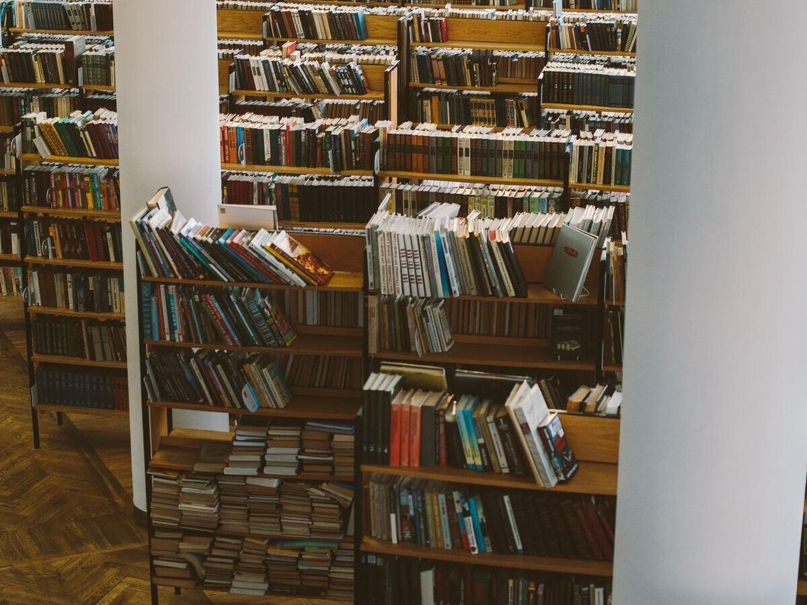

Biblioteka otwarta dla wszystkich
Biblioteka Główna i dziewięć filii w dzielnicach miasta, ponad siedemdziesiąt lat historii. Książki, czytelnie, spotkania autorskie i zajęcia dla dzieci. Zapisy są bezpłatne.
Co u nas słychać
Aktualności
Spotkania, konkursy, zajęcia i ogłoszenia ze wszystkich placówek.
Gdzie nas znajdziesz
Nasze placówki
Biblioteka Główna, Wypożyczalnia Centralna i dziewięć filii w dzielnicach.
Biblioteka Główna — Czytelnia Główna
ul. O. Strumieńskiego 4, Mysłowice
codziennie 9:00–17:00, soboty nieczynne
Wypożyczalnia Centralna
ul. Strumieńskiego 4, Mysłowice
codziennie 9:00–17:00, soboty nieczynne
Filia biblioteczna nr 1
ul. Laryska 5, Mysłowice-Brzezinka
codziennie 10:00–18:00, soboty nieczynne
Filia biblioteczna nr 2
ul. Wielka Skotnica 84a, Mysłowice
poniedziałek–czwartek 9:00–17:00, piątek 8:00–16:00, soboty nieczynne

O bibliotece
Ponad siedemdziesiąt lat w mieście
Prowadzimy wypożyczalnie i czytelnie dla dorosłych oraz dla dzieci i młodzieży, organizujemy spotkania autorskie, dyskusyjne kluby książki i zajęcia dla najmłodszych. Zapisać się można od ręki, wystarczy dokument tożsamości.